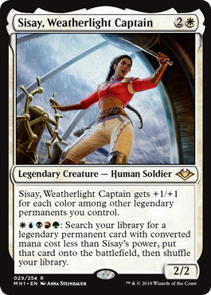
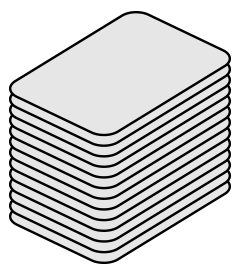

Full Ruleset
Along with format specific rules, Commander also follows the general rules of Magic the Gathering
Multiplayer
Unlike most Magic the Gathering formats, Commander is a multiplayer format, because of this, each player draws on their first turn. In Commander the starting life total is 40, and every player having one free muligan. Traditionally Commander is played with 4 players, but the format can be played with anywhere from 2-6 players, however the intended experience is to play with 4 players.
The Commander
The commander, is a card that is not shuffled into the rest of your library, instead the card is put into the command zone. If the commander is in the command zone it can be casted any point in time (following normal timing rules). The card must be a legendary creature, and whenever the creature is removed it will be put back into the commmand zone, but it will now cost two more than it took to cast it before. Commander's also have commander damage, whenever a player takes damage directly from another player's commander that damage is tracked, if the total amount of damage to one player from one other player's commander is 21 or greater, than that player loses the game.
Color Identity
A card's color idenity is defined by what mana symbols appear on the card. For instance, the card shown above, Sisay, Weatherlight Captain, has all five colors of Magic in her text box, which means the card has the identity of white, blue, red, green, black. Which means that this card can only be put into a deck that has all five of those colors in it.
Deck Requirements
One Legendary creature must be selected as a commander, and 99 other cards will make up the rest of the deck. All cards within the deck must be apart of the chosen commander's color Identity and the deck cannot have any duplicates within it.
Banned Cards

The following cards are banned from being played in the Commander format, because they are either too powerful or harm the flow of the game:
- | Ancestral Recall |
- Blance |
- Birothym |
- Black Lotus |
- Braids, Cabal Minion |
- Chaos Orb |
- Emrakul, the Aeons Torn |
- Erayo, Soratami Ascendant |
- Falling Star |
- Fastbound |
- Gifts Ungiven |
- Griselbrand |
- Iona, Shield of Emeria |
- Karakas |
- Leovold, Emissary of Trest |
- Library of Alexandria |
- Limited Resources |
- Mox Emerald |
- Mox Jet |
- Mox Pearl |
- Mox Ruby |
- Mox Saphire |
- Panoptic Mirror |
- Paradox Engine |
- Primeval Titan |
- Prophet of Kruphix |
- Recurring Nightmare |
- Rofellos, Llanowar Emissary |
- Shahrazad |
- Sundering Titan |
- Sway of the Stars |
- Sylvan Primordial |
- Time Vault |
- Time Walk |
- Tinker |
- Tolarian Academy |
- Trade Secrets |
- Upheaval |
- Worldfire |
- Yawgmoth's Bargain |